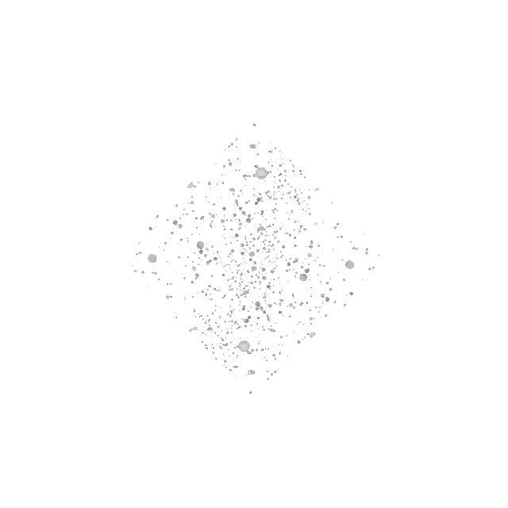
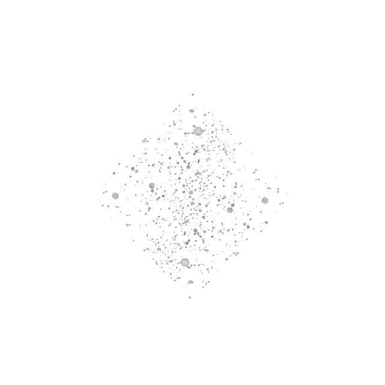

Frequency - Color Mapping
144Hz - Light Blue
244Hz - Light Green
350Hz - Pink
384Hz - Teal
396Hz - Burgundy
400Hz - Dark Green
432Hz - Dark Purple
480Hz - Dark Blue
528Hz - Yellow
540Hz - Turquoise
700Hz - Orange
768Hz - Light Purple
852Hz - Silver
963Hz - Gold
All Other Hz - "White Noise"
 
